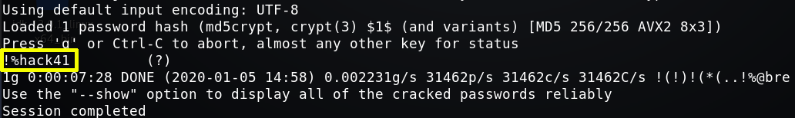

7.2 Cracking password with John
Let's see the content of the file “/var/backups/passbkp/md5-hash”
$
cat
/
var
/
backups
/
passbkp
/
md5-hash
Output:
$1$rohit$01Dl0NQKtgfeL08fGrggi0
Crack the password with “john” tool, using rockyou.txt dictionary and “md5crypt”.
On your Kali Linux Machine
Create a file called rohit.txt and copy the md5 password (
$1$rohit$01Dl0NQKtgfeL08fGrggi
hit) on it.
Run the following code.
$ john --wordlist=
/
usr
/
share
/
wordlists
/
rockyou.txt --format=md5crypt rohit.txt
After a coffee...
Output:

Username: rohit
Password: !%hack41
Index